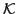
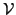
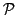
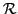
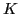

Next: Bibliography
Bram Metsch
Algebraic Multigrid (AMG) for Saddle Point Systems - A self-stabilizing approach
Universitaet Bonn
Institut fuer Numerische Simulation
Wegelerstrasse 6
53115 Bonn
GERMANY
metsch@ins.uni-bonn.de
We present an Algebraic Multigrid (AMG) approach to the solution of
Stokes-type saddle point problems of the form
where  is positive definite and
is positive definite and  is positive semi-definite.
is positive semi-definite.
In particular, we address the two main challenges to the
construction of a saddle point AMG method,
- The indefinite matrix

does not define an inner product
and norm, hence, it is not possible to carry out the AMG convergence
proof in terms of the energy norm (as is done in AMG for symmetric
positive matrices),
- The coarse grid matrix computed by the Galerkin product may not
be invertible at all.
The starting point for the construction of our AMG method for saddle
point systems is the inexact symmetric Uzawa smoothing scheme
introduced in [1]. We set up the
coarse grids and prolongation operators for the spaces

and
 independently. From these per-space interpolation operators,
we assemble the global interpolation and restriction operators
independently. From these per-space interpolation operators,
we assemble the global interpolation and restriction operators

and

such that an inf-sup condition for 
implies an inf-sup-condition for the coarse system computed by the
Galerkin product
Especially, our approach does not require that the coarse grids for
and
are adapted to each other. Instead,
the stability and thus the invertibility of the coarse grid operator is ensured by the
construction of the transfer operators.
We also give a two-grid convergence proof for our method based
on the framework of [2], which does not depend on the
existence of an energy norm.
Next: Bibliography
root
2012-02-20